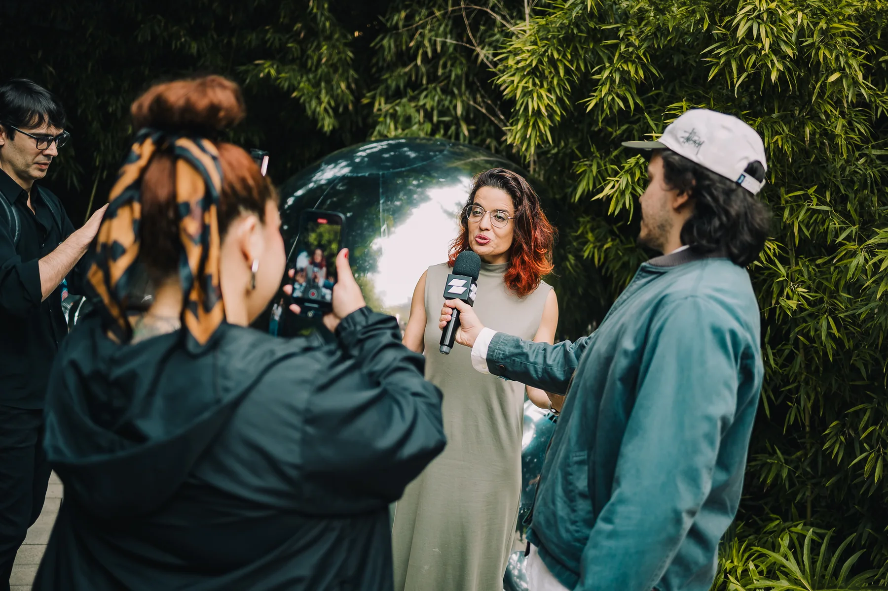
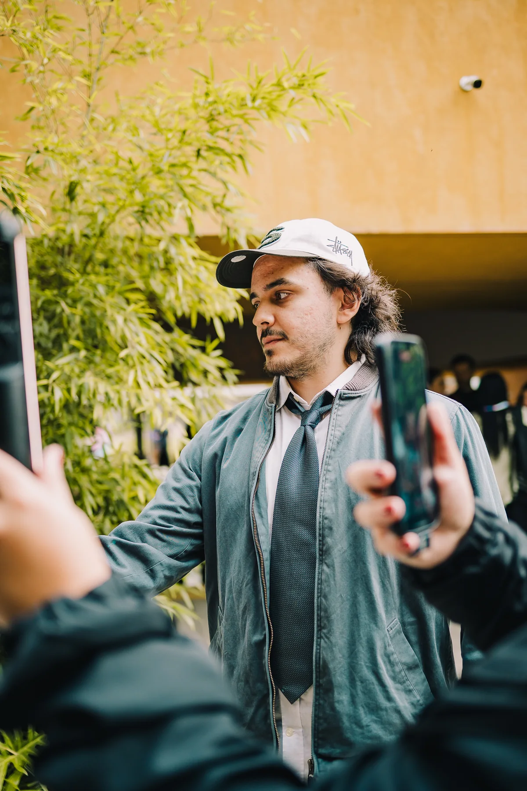
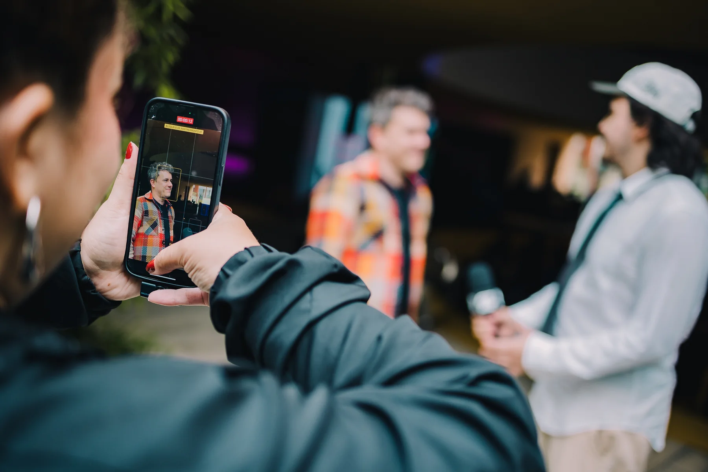
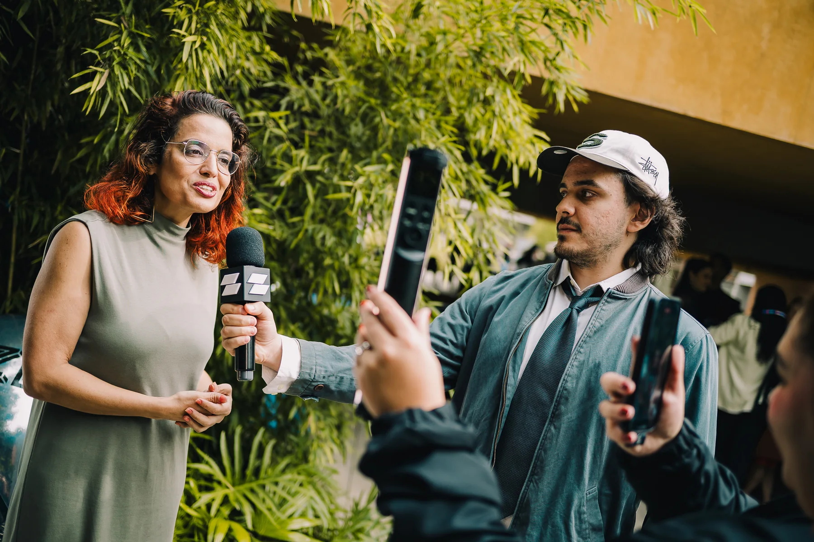
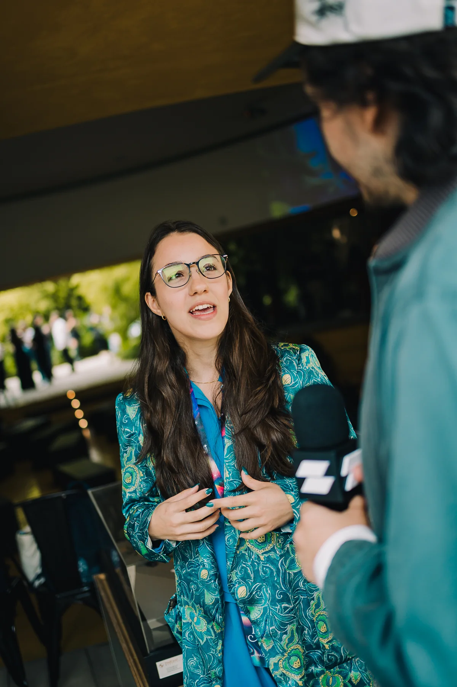
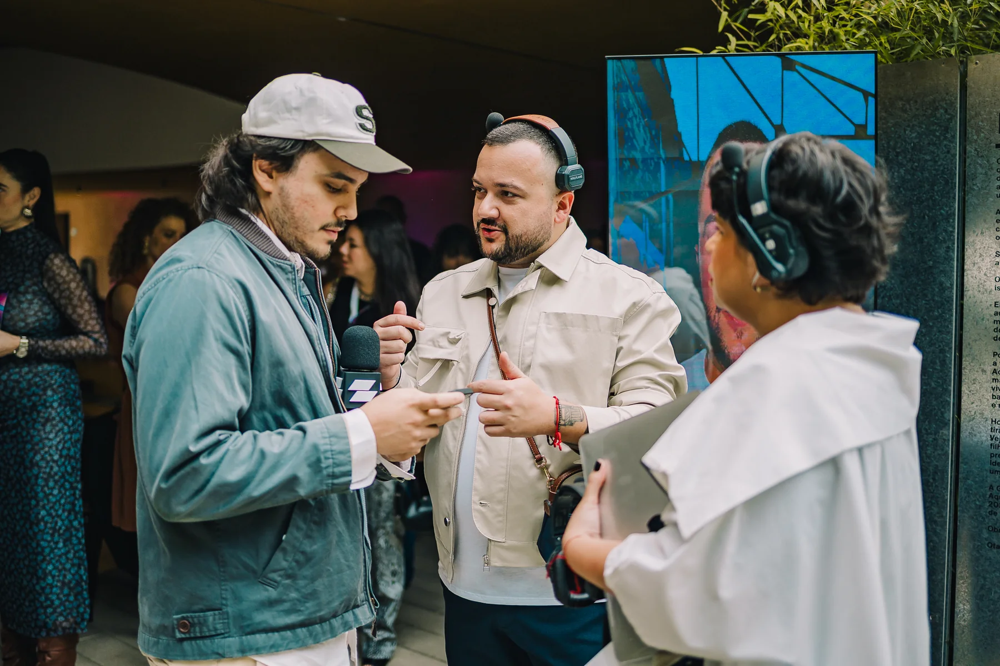
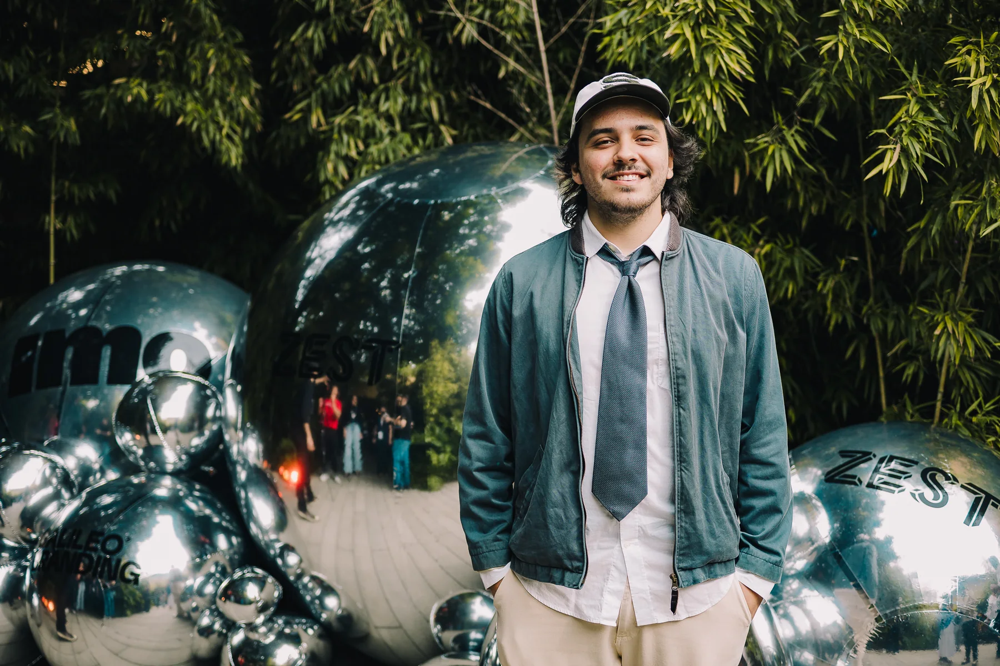

Estratégia de Conteúdo
Comunicação alinhada ao negócio para qualificar leads, fortalecer comunidades e melhorar a percepção de marca.
MARKETING & CONTENT STRATEGY
Estratégia com intenção.
Conteúdo com conexão.
Enrico Rocha
Miascovsky
Ajudo marcas a encontrar uma voz autêntica e construir conexões reais com seus públicos. Uno estratégia analítica e criatividade narrativa para criar histórias que ressoam.
Do storytelling nas redes às campanhas com influenciadores, meu olhar conecta branding, conteúdo e endomarketing a objetivos de negócio e resultados mensuráveis.
Comunicação alinhada ao negócio para qualificar leads, fortalecer comunidades e melhorar a percepção de marca.
Storytelling, consistência visual e verbal e experiências que reforçam o valor percebido da marca.
Gestão de influenciadores e conexão entre perfil, conteúdo e campanha. Relações que fazem sentido.
Escuta ativa, presença de marca e conversas no tom certo para transformar seguidores em comunidade.
Criação de conteúdo que une espontaneidade, propósito e estratégia, da ideia à narrativa audiovisual.
Da essência da marca à conversa com o público. Cinco projetos, diferentes formas de criar conexão.
ATUAÇÃOCriação completa do manifesto
Responsável pela criação completa do manifesto da GiG House. A ideia concebida pelo cliente ganhou forma em uma peça que traduz a essência da marca de maneira criativa e autêntica.
Traduzir a essência da marca de forma criativa e autêntica.
Criação completa do manifesto.
Transformar a ideia concebida pelo cliente na peça audiovisual final.
ATUAÇÃOGestão de redes, conteúdo e influenciadores
Na agência Zest, fui responsável pela gestão das redes sociais da Suvinil, criação estratégica de conteúdo e relacionamento com a comunidade. Atuei diretamente com influenciadores e campanhas para aproximar marca e público e fortalecer sua presença digital.
Na Semana do Fosco, participei da produção e fui responsável pela gestão de influenciadores para campanhas e conteúdos.
Outro reel do portfólio: ver original Preview indisponível na fonte.
ATUAÇÃOEstratégia, campanhas e produção
Criação e execução de estratégias de marketing e conteúdo para conectar marca e público. Trabalho direto com Rodrigo Faro, Cauã Reymond e Juliana Paes, além da gestão de campanhas e produção de lives, eventos e podcasts.
Comunicação mais assertiva para a @acelerai, com leads mais qualificados, fortalecimento da comunidade, melhor percepção de marca e redução de CAC.
ATUAÇÃOCopywriting, direção de arte, captação e edição
Criação e produção de conteúdo para redes sociais e canais próprios, de ponta a ponta. Pautas, narrativas e formatos para traduzir a proposta de valor da Eletromidia em uma voz editorial mais humana, conectada à cultura, ao comportamento e à dinâmica das cidades.
ATUAÇÃOProdução audiovisual e conteúdo interno
Produção de conteúdo interno, com captação e edição em múltiplos formatos, tradução e legendagem em português, inglês e espanhol. Colaboração direta com lideranças globais e do Brasil, em alinhamento com Marketing e RH, propósito, cultura e identidade da empresa.
Materiais produzidos exclusivamente para uso interno e lideranças. Por confidencialidade e diretrizes corporativas, não estão autorizados para divulgação pública ou uso no portfólio.
Escuta, presença e espontaneidade.
É no encontro com as pessoas que a história acontece.







Branding, conteúdo e estratégia.
Um olhar que conecta tudo.